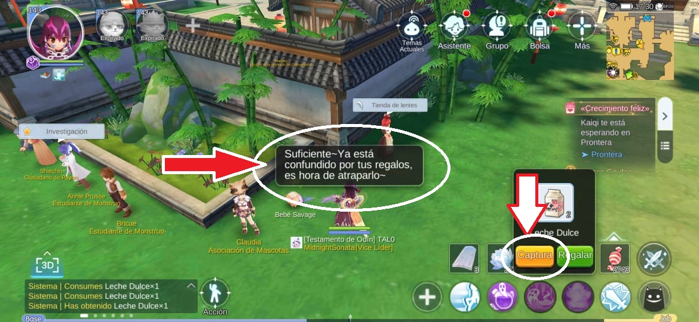

Debes conseguir algunas mascotas lo más pronto posible! porque éstas te ayudarán en combate, obtener artículos raros, zeny, pociones de experiencia y muchas cosas más!.
0u0)/
Como atrapar una mascota vision general
- 1. Consigue varios artículos de domesticación. Cada mascota requiere un cierto número para obtener una tasa de éxito del 100%.
- 2. Encuentra un buen lugar con poca gente
- 3. Desactiva tu autoataque
- 4. Apunta al monstruo y usa el objeto de domesticación. Aliméntelo varias veces según la mascota hasta que aparezcan los corazones amarillos
- 5. ¡Atrapalo!
Como atrapar una mascota pasos
1. Consigue varios artículos de domesticación. Cada mascota requiere un cierto número para obtener una tasa de éxito del 100%.
Primero, necesita obtener artículos de domesticación para la mascota que desea atrapar.
Puedes consultar los elementos de domesticación de cada mascota en tu Manual de aventuras.
Como puedes ver, ¡capturar mascotas también otorgará atributos para tu Libro de Aventura!
También puedes comprar en el Pet NPC cerca del reproductor de música en South Prontera usando "Conchas de colores", un objeto raro que puedes obtener como recompensa de Pet Adventure. Pero es mejor comprar los artículos de domesticación en Exchange.
Para atrapar una mascota con una tasa de éxito del 100%, debe alimentarla una cierta cantidad de veces. Este número varía según la mascota. Si atrapas a una mascota con un solo objeto de domesticación, existe la posibilidad de que falle. Cuantos más elementos de domesticación dé = mayor tasa de éxito. Ésta es la cantidad requerida de artículos de domesticación por mascota para obtener una tasa de captura del 100%:
tabla de mascotasAsí que asegúrese de llevar la cantidad especificada antes de ir e intente atraparla si desea atraparla con éxito de inmediato.
2. Encuentra un buen lugar con poca gente
Vaya a la ubicación de la mascota que desea atrapar y busque un lugar, preferiblemente donde haya pocas personas.
En Payon hay un bebe Sabage que, si no la han matado, está ahí quieta permanentemente para ser usada como practica, asegurese que no transiten muchas personas para que no la maten cuando le esté dando los objetos de captura
3. Desactiva tu autoataque
Desactive (desmarque) la habilidad Auto Attack en la pestaña Adventure Skills para evitar matar a la mascota que desea atrapar o que ésta nos empiece atacar
4. Apunta al monstruo y usa el objeto de domesticación. Aliméntelo varias veces según la mascota hasta que aparezcan los corazones amarillos
Abra su inventario y haga clic en la siguiente opción:
luego arrastre el elemento de domesticación a cualquier espacio.
Ahora seleccione al monstruo que desea capturar, con el autoataque desactivado no lo atacará, solo lo seleccionará y deberá aparecer el icono del monstruo como muestra la siguiente imágen:
Utilice el elemento de domesticación en la tecla de acceso rápido de su elemento. Esto consumirá 1 pieza del artículo de domesticación. Se mostrará una raya de luz morada/rosa entre usted y la mascota. El “ Capturar / Regalar ” emergente en la parte inferior derecha se mostrará.
Haga clic en "Regalar" para alimentar a la mascota con otra pieza del elemento de domesticación, y la tasa de éxito de captura mejorará indicada por la aparición de corazones:
- Corazones rojos - baja probabilidad
- Corazones rojos y círculos amarillos - probabilidad media
- Corazones amarillos, sin corazones rojos: ¡100% de posibilidades!
Aliméntelo una y otra vez hasta que todos los corazones rojos desaparezcan y solo aparezcan los corazones amarillos.
Consulte la tabla anterior para conocer las cantidades que necesita cada mascota que se pueden capturar
Una vez que todos los corazones se vuelven amarillos, esto indica que atraparás a la mascota con éxito. Presione Capturar .
¡La máquina tragamonedas jugará y obtendrás tu nueva mascota!
Ponle un nombre a tu mascota
Antiguamente era obligación ponerle un nombre a tu mascota capturada, pero ahora vienen con el nombre propio del monstruo y solo le das a Poner en bolsa ó Eclosionar
Eclosionar equiará su mascota y estará lista para defenerlo de los monstruos y jugadores enemigos
Poner en bolsa lo dejará en su bolsa de Mascotas en la cual podrá ver todas sus mascotas capturadas y guardadas en ésta bolsa
¿Ahora que?
¡Ahora tienes muchas opciónes que hacer con tu mascota!
Puedes equipartela para aumentar tus caracteristicas
Las mascotas equipadas te ayudarán en combate golpeando también a tus enemigos
Mandarlas a trabajar antes que desconectes del juego para seguir progresando cuando estés ausente.
Consulte nuestras guias:
Creo que está todo abarcado por ahora. Si tienes una duda, consulta, mejorar esta guia o si te gustó mi trabajo, puedes mandarme un mensaje o consultarme!
(=0u0=)/ contáctame +56 9 89096503